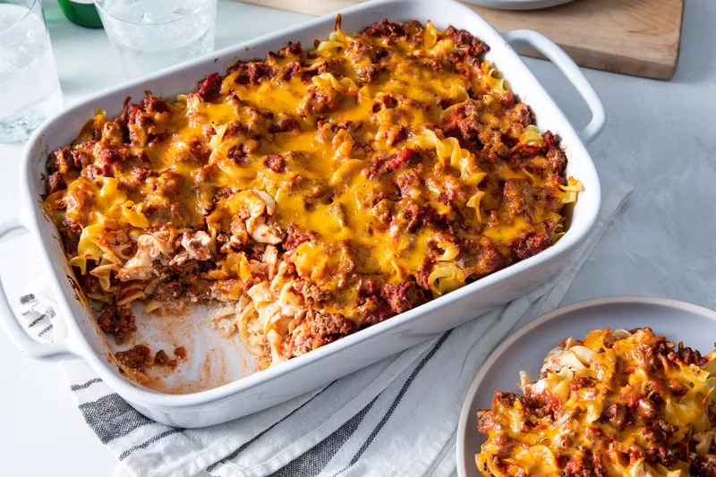

Lasagna casserole

Imagen de una lasagna
How to Make Sloppy Joe Casserole
You’ll find the full, step-by-step recipe below — but here’s a brief overview of what you can expect when you make homemade sloppy joe casserole:
Boil and drain the pasta.
Cook the beef in a Dutch oven.
Stir in the vegetables and seasonings, then cook until veggies are softened.
Stir in the sauce, condiments, and sugar. Bring to a boil, then simmer until thick.
Remove from heat, stir in cooked pasta, corn, and 3/4 cup of cheese.
Transfer the mixture to a prepared baking dish and sprinkle with remaining cheese.
Bake until the casserole is heated through and the cheese is melted.
How to Store Sloppy Joe Casserole
Store the leftover sloppy joe casserole in an airtight container in the refrigerator for up to four days or freeze your leftovers for up to three months.
Editorial contributions by Corey Williams
Ingredients
1x
2x
4x
Original recipe (1X) yields 6 servings
1 (16 ounce) package penne pasta
1 tablespoon olive oil
1½ pounds ground beef
1 medium yellow onion, chopped
1 small red bell pepper, chopped
1 small green bell pepper, chopped
1 tablespoon paprika
2 teaspoons garlic powder
2 teaspoons kosher salt
2 (15-ounce) cans tomato sauce
½ cup ketchup
2 tablespoons yellow mustard
2 tablespoons worcestershire sauce
2 tablespoons light brown sugar
2 cups frozen yellow corn kernels
1 ½ cups shredded Colby-Jack cheese, divided
cooking spray